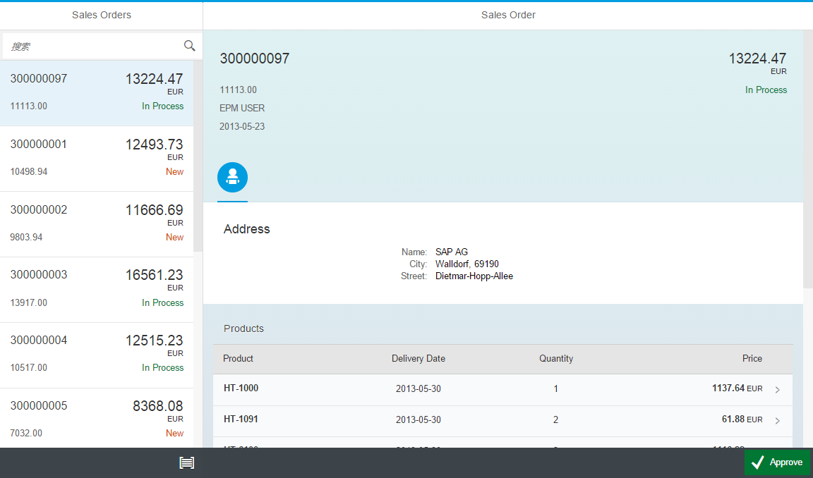

这个最佳实践练习的子系列又会分为若干篇，但是不会完全按照Tutorial里面的章节来分，因为我希望每一篇都是都是一个完整的练习，都能跑出来，而不仅仅是一个片段。
最后做出来的App是这样的。

首页
我们先把首页做出来，还是以之前Hello World的代码框架开始吧。
首先在 <tomcat>/webapps/ 下新建一个目录就叫 ui5bp 吧，创建 index.html ，代码如下：
index.html
<!DOCTYPE html> <html> <head> <meta http-equiv="X-UA-Compatible" content="IE=edge" /> <!--<meta http-equiv="Content-Type" content="text/html;charset=UTF-8"/> --> <meta charset="UTF-8"> <title>SAPUI5 Best Practice</title> <script id="sap-ui-bootstrap" src="http://localhost:8080/openui5/resources/sap-ui-core.js" data-sap-ui-theme="sap_bluecrystal" data-sap-ui-libs="sap.m" data-sap-ui-xx-bindingSyntax="complex" data-sap-ui-resourceroots='{ "ui5.tutorial.bp": "./" }' > </script> <script> </script> </head> <body class="sapUiBody"> <!-- This is where you place the UI5 button --> <div id="content"></div> </body>
打开浏览器，输入 http://localhost:8080/ui5bp/ 你应该可以看到淡蓝色的背景，除此以外，啥都没有。
这里要提一下，我们定义了一个命名空间 ui5.tutorial.bp 把这个命名空间注册到根目录。后续我们定义或者引用资源都需要加上这个命名空间前缀。
打开开发者选项，也没有任何错误，那就成功了，继续下一步。
MVC框架
我们暂时不用Component来做模块化，我们先用最快最简单的方法让程序可以跑出个样子来，然后再慢慢的添加功能。
所以，我们先直接加入MVC。
简单介绍下，MVC就是模型、视图和控制器的简称，一般的Web开发都会用到这种架构用来把前端的UI和业务逻辑分离。具体先不多介绍，直接做吧。
我们先大致规划一下，我们的应用是一个主从页面结构，会有一个Master的页面和Detail的页面，我们今天先创建一个Empty页面来替代Detail。 我们会创建如下文件以及对应的目录：
ui5bp/ +-- view/ | | | +-- App.view.js | +-- App.controller.js | +-- Empty.view.xml | +-- Master.controller.js | +-- Master.view.xml | +-- model/ | | | +-- mock.json +-- index.html
我们最后把App放入到index的content中，把Master和Detail放到App中去，其中包含 .view. 的文件是视图，用来定义UI，包含 .controller. 的文件是控制器，用来处理逻辑。
为了简化应用，我们暂时不使用在线的数据而是用一个json格式的文件数据作为我们的数据模型。这个文件你可以从这里下载。
简单提一下，视图可以用html、xml、js、json这四种文件形式来定义，控制器一般则只能用js。
好了，那我们来看每一个文件的代码。
view/App.view.js
sap.ui.jsview("ui5.tutorial.bp.view.App", { getControllerName: function () { return "ui5.tutorial.bp.view.App"; }, createContent: function (oController) { // to avoid scroll bars on desktop the root view must be set to block display this.setDisplayBlock(true); // create app this.app = new sap.m.SplitApp(); // load the master page var master = sap.ui.xmlview("Master", "ui5.tutorial.bp.view.Master"); master.getController().nav = this.getController(); this.app.addPage(master, true); // load the empty page var empty = sap.ui.xmlview("Empty", "ui5.tutorial.bp.view.Empty"); this.app.addPage(empty, false); return this.app; } });
view/App.controller.js
sap.ui.controller("ui5.tutorial.bp.view.App", { /** * Navigates to another page * @param {string} pageId The id of the next page * @param {sap.ui.model.Context} context The data context to be applied to the next page (optional) */ });
view/Master.view.xml
<core:View controllerName="ui5.tutorial.bp.view.Master" xmlns="sap.m" xmlns:core="sap.ui.core" > <Page title="Product List" > <subHeader> <Bar> <contentLeft> <SearchField search="handleSearch" width="100%" > </SearchField> </contentLeft> </Bar> </subHeader> <List id="list" items="{/SalesOrderCollection}" > <ObjectListItem type="Active" press="handleListItemPress" title="{SoId}" number="{GrossAmount}" numberUnit="{CurrencyCode}" > <attributes> <ObjectAttribute text="{BuyerName}" /> </attributes> </ObjectListItem> </List> </Page> </core:View>
view/Master.controller.js
sap.ui.controller("ui5.tutorial.bp.view.Master", { handleSearch : function (evt) { // create model filter var filters = []; var query = evt.getParameter("query"); if (query && query.length > 0) { var filter = new sap.ui.model.Filter("SoId", sap.ui.model.FilterOperator.Contains, query); filters.push(filter); } // update list binding var list = this.getView().byId("list"); var binding = list.getBinding("items"); binding.filter(filters); } });
view/Empty.view.xml
<core:View xmlns="sap.m" xmlns:core="sap.ui.core" > <Page> </Page> </core:View>
最后我们需要把这些文件和首页关联起来。
index.html
<!DOCTYPE html> <html> <head> <meta http-equiv="X-UA-Compatible" content="IE=edge" /> <!--<meta http-equiv="Content-Type" content="text/html;charset=UTF-8"/> --> <meta charset="UTF-8"> <title>SAPUI5 Best Practice</title> <script id="sap-ui-bootstrap" src="http://localhost:8080/openui5/resources/sap-ui-core.js" data-sap-ui-theme="sap_bluecrystal" data-sap-ui-libs="sap.m" data-sap-ui-xx-bindingSyntax="complex" data-sap-ui-resourceroots='{ "ui5.tutorial.bp": "./" }' > </script> <script> var oView = sap.ui.view({ id : "app", viewName : "ui5.tutorial.bp.view.App", type : "JS", }); // Using a local model for offline development var oModel = new sap.ui.model.json.JSONModel("model/mock.json"); oView.setModel(oModel); oView.placeAt('content'); </script> </head> <body class="sapUiBody"> <!-- This is where you place the UI5 button --> <div id="content"></div> </body>
完工，打开 http://localhost:8080/ui5bp/ ，可以看到下图：

总结
- Master.view.xml:
这个页面大概是我们这次教程中最复杂的一个了，其中用到了这些控件：- Page
- Bar
- List
- ObjectListItem
- Master.controler.js:
目前我们只定义了一个方法 - 搜索。 - Empty.view.xml:
只是一个placeholder，因为Detail页面我们还没有创建，所以是一个空页面。 - App.view.js:
容纳Master和Detail页面的容器。 - App.controller.js
之后会在这里定义Master和Detail页面之间的导航功能